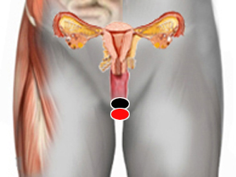
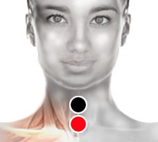

Coronavirus
Pares Coronavirus
uretra - uretra
pata de ganso - pata de ganso
temporal - bulbo
nariz - esófago*
laringe - sacro
colon desc. - Pezón (izq)
cuádriceps (izq). - Pezón (izq)
tobillo - tobillo

Pares asociados*
laringe - laringe
suclavia - subclavia
contraciego - contraciego
pulmón - pulmón
supraespinoso - supraespinoso
popliteo - popliteo
laringe/bulbo - pectorales

* La polaridad puede cambiar según la cepa del virus, se puede rastrear como SARS-Cov-2. Par descubierto por el investigador mexicano Juan Enrique Hernández Sahagún.
** La lista de pares asociados sólo muestra los más comunes, se recomienda llevar a cabo el rastreo completo.
Generalidades:
Se confunde con insuficiencia renal , uretritis, hematuria (sangre en la orina), cistitis y fiebre alta. Menstruaciones muy largas. No confundirlo con Ovario-Trompa. Éste virus excita la proliferación de hongos. Revisar pares de hongos. El virus puede cursar asintomático, presentar síntomas de catarro leve, hasta el síndrome respiratorio agudo (SRAS).
COVID-19
También conocido como Coronavirus de Wuhan, pertenece a la familia de los Coronavirus y está formado por una sola cadena de ARN (virus ARN monocatenario positivo). También ha sido llamado 2019-nCoV o incluso: SARS-CoV-2 ya que en algunos enfermos causa el Síndrome respiratorio agudo severo, por lo que resulta especialmente peligroso en personas inmunodeprimidas, como pueden ser pacientes con VIH-Sida, cáncer, Lupus, etcétera. También prestar especial atención a niños y mujeres embarazadas. A la fecha se propone tratarlo con los mismos pares que aparecen en el presente artículo. El Dr. Isaac Goiz Durán, padre del biomagnetismo médico, enfatiza la necesidad de encontrar hongos y bacterias que puedan estar detonando su patogeneceidad. En especial revisar el Bacilo Pertusis (responsable de los síntomas respiratorios), pero sin omitir el realizar un testeo completo.
Se recomienda seguir las medidas generales del biomagnetismo en el tratamiento de virus como: rastrear a familiares y personas cercanas para prevenir su diseminación. Cambiar el cepillo de dientes y rastrillo y no prestar utencilios personales. Recomendar las medidas generales como lavarse las manos antes de comer, no llevarse las manos a los ojos o a la boca, usar tapaboca en lugares públicos, cubrir el estornudo con el entrecodo.
Transmisión
Se trasmite por gatos y conejos así como muchas otras especies de animales (camellos).